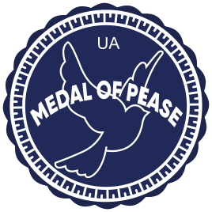

THANK YOU FOR
BEING A PART OF
OUR COMMUNITY

Push & Download
the Medal of Peace and establishments on your website or social media profiles.
Details for donations
You can help us or our friends by sending any amount of money on next accounts. Every penni will be used to help Ukraine and ukrainian people.
Caritas Ukraine
Organization that helps children, refugees, people who have lost their homes, families who became victims of war
Go to page ">Official crypto accounts from the Minister of Digital Information Fedorov Mikhail
Go to page ">Club of benefactors
Emergency aid for children that are running away from war in Ukraine: how to help if you are abroad.
Go to page ">A lover of life/Zhyttelub
Charitable foundation «Lifelover» creates opportunities for people of third age.
Go to page ">National Psychological Association during the war
Go to page ">Victor Pinchuk Foundation
Go to page ">The Tabletochki Foundation
The Tabletochki Foundation helps children who continue to be treated for cancer, even during the war.
Go to page ">UNICEF
UNICEF is working to scale up life-saving support for children and their families
Go to page ">Norwegian Refugee Council, NRC
The Norwegian Refugee Council (NRC) is an independent humanitarian organisation helping people forced to flee.
Go to page ">Fund Stabilization Support Services
Provide shelter, food, clothing, medicine, hygiene products, and money, provide transport to those who leave the country
Go to page ">National Bank of Ukraine
Support the Armed Forces of Ukraine and People Affected by Russia’s Aggression
Go to page ">Airbnb Ukraine
Help with home. One more idea for support ukrainians during the war - people are booking Airbnbs in Ukraine — not to stay, but to lend their support
Go to page ">